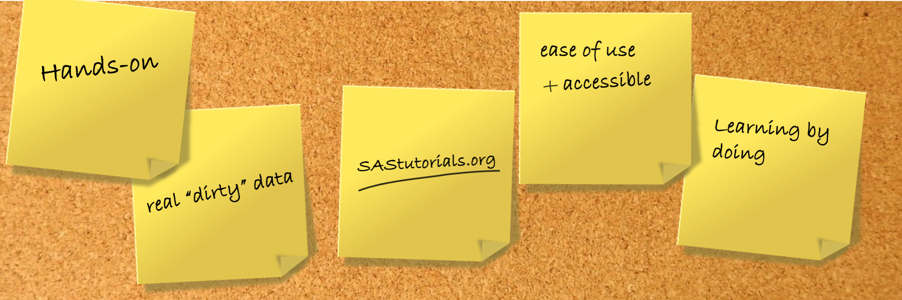
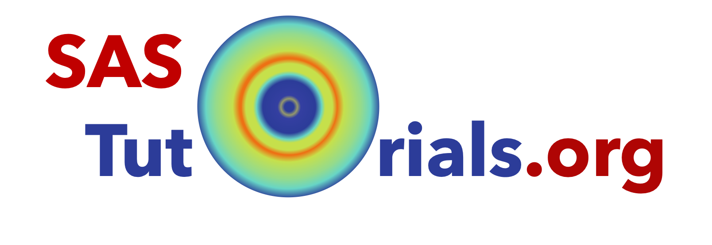

Home
About SAStutorials.org
Andreas Haahr Larsen

Illustration of some of the main ideas behind SAStutorials.org
Idea
SAStutorials.org was initiated in 2023 by Andreas Haahr Larsen, Jacob Kirkensgaard and Martin Cramer Pedersen. The basic idea came from the fact that small-angle scattering (SAS) is difficult to understand and interpret for students and new users alike. There are many pitfalls in the analysis and interpretation of SAS data.
We missed an effective learning tool that could be used in courses and as self-study. This led to SAStutorial.org, first as a tool used in our own courses at University of Copenhagen, but later expanded to (hopefully) be a community learning tool.
Core principles
SAStutorials.org rely on four core principles- Activity. We believe learning comes from hands-on activities, whether through working with different data analysis strategies, or derivations of form factors. Learning comes from what the learner does, not from what the teacher does (or says).
- Accessibility. We hope to make learning of small-angle scattering accessible to all users. All information and software should be accessible for all, and require as little effort as possible. We support open science.
- Transferability. The achieved skills should be transferable to actual data and problems.
- Community. We encourage active participation and contribution from experts in the field. We strive to include various different software packages and analysis strategies as well as different data formats from various sample types.
Tutorial design
Our goal is that all tutorials roughly follow the same design. This design is based on the structure of observed learning outcomes (SOLO) taxonomy as well as the theory of didactic situations (TDS).
We are working on a paper describing the website and the didactic philosophy in more . We plan to submit this to the SAS2024 special issue of Journal of Applied Crystallography.

The SAStutorials.org logo, encompassing an idealized isotropic 2D scattering pattern.
Further information
Information about contributors and funding can be found on the frontpage footer.
Feedback
Help us improve the tutorials by- Reporting issues and bugs via our GitHub page. This could be typos, dead links etc., but also insufficient information or unclear instructions.
- Suggesting new tutorials/additions/improvements in the SAStutorials forum.
- Posting or answering questions in the SAStutorials forum.